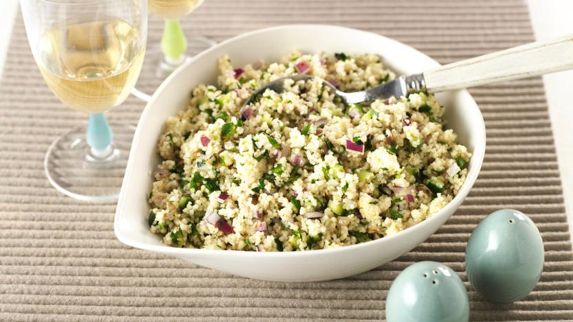

What's Cookin?
What You'll Need:
- 1 Tbsp Peanut oil (or other high heat oil)
- 1 Large Diced White Onion
- 2 Cloves of Minced Garlic
- 1 lb of Chopped Chicken Thigh
- 6 cups of Chicken Broth
- 1 Tsp Ground White Pepper
- 1/2 Tsp Ground Black Pepper
- 1 Tsp Cayenne (more if you're into that shit)
- 1 Tsp Salt
- 1/2 cup Chunky Peanut Butter
- 8oz Roasted Green Chiles: Hatch, Poblano, or Anaheim (canned or fresh roasted-see below for instruction)
- Optional: 1-2 Diced Jalapeno
For the Chiles:
Preparation: 12-18 fresh chiles cut in half (long ways) tops and seeds removed. Place on a foil lined baking sheet skin side up and flatten with hand (they don’t have to be pancake flat just as flat as you can get em with a good squish). Heat broiler to high and place chiles on second to top rack. Let cook for 10-15 minutes until skin darkens and blisters. Take from oven and transfer quickly to plastic bag. Seal bag and allow to steam until cool. This should allow the skin to peel off without trouble. Dice chiles and set to side.
- Heat heavy bottomed soup pot (at least 6 qt) to medium high heat and add the oil and onions and cook until translucent stirring occasionally(about 5 minutes)
- Add the chiles, chicken and garlic and jalapenos if using. Cook until the chicken just until it starts to brown (2-3 minutes)
- Add the broth, spices, and peanut butter, stir until peanut butter no longer sticks together and stew seems to be uniform consistency.
- Allow stew to simmer for 20-30 minutes until thickened and chicken is cooked through.
- Serve over rice or eat with warmed tortillas.
*Inspired by Peter Downing
What You'll Need:
Secret Sauce:
Once these are all attained, heat that bad boy in the microwave until melted. Stir and combine. Drink first batch and do a second for waffles.
For the Waffles:
- Add the warm water, yeast and sugar to a bowl and set to side, allow at least 5 minutes to activate (until yeast begins to bubble).
- In a V large bowl Add the flour.
- In yet ANOTHER bowl mix together the butter, milk, vanilla and maple syrup.
- Add the wet ingredients to the flour and mix.
- Add the now activated yeast mixture to the bowl and stir until combined.
- If using an instant yeast and serving in the near future (at least 30 minutes), cover with plastic wrap and leave at room temp. If using Fast acting, cover with plastic wrap and place in fridge overnight. If using regular yeast cover with plastic wrap and place in a cool room slightly lower than room temp for at least a few hours to overnight.
- When ready to make, preheat waffle iron, while that heats add the eggs and baking soda and stir in until just combined. (batter should be at least doubled in size, if it seems to have gone flat add 1 Tbsp warm water and 1.5 Tbsp flour, and a sprinkle of sugar should bring that yeast back to life).
- Place about ½ cup batter on buttered waffle iron.
- Remove when golden and enjoy with that sweet sauce or maple syrup. Do what you want.
*Inspired by Ina Garten

About Me

My name is Graham Downing and I love to eat. I’m bougie as fuck about food and love to make delicious dishes for myself, the hunny, and the homies. I work as a Nurse on the Cardiac ICU at Children’s Minneapolis and love any kind of activity that keeps me hungry! Samir Bekhechi said I had to write this bio for homework and I love doing everything he tells me.
Feel free to find me on social media!
What's in the Pantry?
I always make sure to keep these around my kitchen: Fresh Garlic, Ginger, Limes, olive oil, balsamic vinegar, butter, some kind of meat, rice. Also snacks and coffee for while cooking, this stuff takes it out of you!